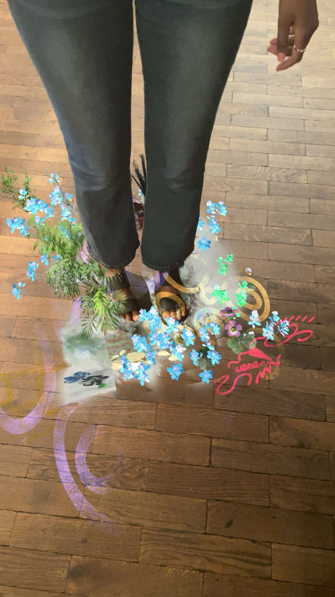

is a Snapchat lens that explores themes of emotional energy and building spaces with communities in mind, as it impacts the energy and feelings of people. Built using Lens Studio, the audience can view the energy they exude onto the space around them.
The augmented reality (AR) tracks the user’s feet, surrounding them with blooming flowers and vivid visuals that follow their every step. Built project during Snap Lens Lab X RCA Programme
Duration
28 July 2025 - 13 August 2025
Tools
Lens Studio, Blender, Supersplat, PolyCam
Category
Augmented Reality, 3D Models, 3D Gaussian Splats
Collaborators
Adaora Williams, Asya Ally
Role
Builder / Creative Technologist : My role was to build the interactive lens from scratch and scan, edit, and curate 3D models and animations in Blender.
Process
Scanned 3D models of local flowers and created additional modeled + animated assets in Blender.
Using Snapchat’s AR Fashion Shoe Lens template, I removed the default shoes and UI elements, retaining only the foot recognition
and attachment functionality. Two planes were attached to the bottom of the feet, and the previously created assets were organised within the scene
. Animations of scaling (increasing and decreasing size) were applied to select assets to simulate a natural growing effect at different rates.

Challenges & Solutions
As this was my first experience using Lens Studio, one key lesson I learned was the importance of compressing all assets to ensure the lens is publishable on Snapchat. The lens must be under 8MB, but near the end of production, I realised the file size was massively over the limit.
Even though I had compressed assets during import stage, such as 3D models from Blender and exported Gaussian splats from 3D scans — the file size remained too large. Through further research, I discovered that Gaussian splats take a lot of storage space due to the extra noise, splats, and nodes surrounding the visible model.
To fix this, I used an external tool called Supersplat and removed/edited unnecessary nodes without affecting the model itself. After this process, the lens size was reduced enough to become publishable on Snapchat.